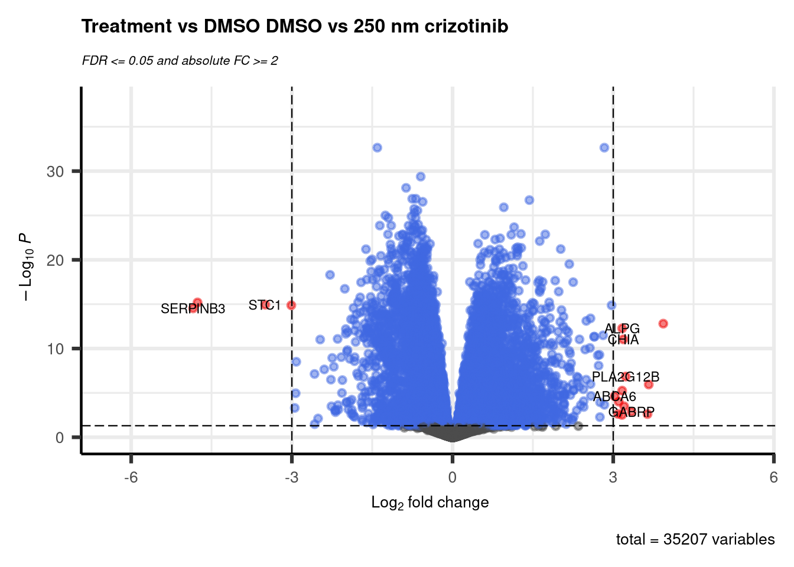

This logbook contains the logs of the research part of the bio-informatics minor at the Hanze in 2025-2026.
Author: Ramon Reilman
Class: BFV3
Minor: Bio-informatics
First things First
The first thing done for this minor is researching the best working time for the medication series, we have no involvement in this part. We do need to select genes, done by Jasper Jonker, and design / find primers for these. This has to be done to QPCR (quantative) these given genes, so that we can do a transcriptomics analasis on the sequencing data.
Gene choices
Literary research was done by Jasper, the findings and gene choices can be found in his logbook
Primers
After speaking to the head of the labwork, we came to an agreement on primer design. This agreement came wth a set of rules for designing these primers, listed below.
Melting temp: Preferably around 60 degrees celcius
Length range: 15-25 with a preference of 20 base pairs.
No circular primer forming.
Tools: primerblast
A list of genes will be created to be used for the qPCR. This list will be given by Jasper. I’m going to write a script that can download the sequences of DNA of these genes in fasta format.
withopen("/students/2025-2026/ros1_transcriptomics/minor_ROS1/data/showcase.fasta", "w", encoding='utf-8') as f: f.write(fasta_showcase)
3307
And just like that we have a fasta file containing the sequence of a given gene. I will now create a script that takes a file of gene names, and turns in into a multifasta file.
These fasta files will be pulled as the mRNA variant 1 transcripts of the genes, the GRB2 variant 1 page can be found here
We can design primers for these sequences using primer blast. Which takes some parameters to create these primers. I’m going to do a test-run with the fasta file generated above. I will load in these primers, with the selected parameters and discus the output of primer blast.
This dataframe contains the ouput of a primerblast run, i want to explore the different columns, and see what they mean.
The first couple of columns are about the forward primer starting with basic information about the length of the primer and where the primer starts/ends. The more interesting metrics show up after this:
Tm, the primer melting temperature
Self complementary, a metric to display how much a primer can bind to itself (or copies of itself) this is naturally not wanted, the lower the value is, the better.
3` self complementary, similar to the self complementary metric, but now specifically for the 3` end. Naturally unwanted too, so the lower the better.
The same metrics exist for the reverse primer
Transcriptomics
We’ve gotten data from different research to prepare our pipeline for the sequencing data that will arrive in a couple of weeks. This data has been downloaded.
Jasper and I are thinking of creating a snakemake pipeline to process our data, considering this; We will create a complete pipeline for transcriptomics, starting with the downloading of data - turning it into fasta files and even creating an indexed reference genome. All of these steps, and more will be found in this (and Jasper’s) logs.
The first thing I want to do while we are waiting for the downloading of data is creating an indexed reference genome using STAR. We’ve done this before, so should not be that much of an effort.
Both the test data has been downloaded, and the genomes have been indexed. This means i will have to fasta-dump the sra files, and then afterwards map these.
We can continue with the mapping process after this dumping is done. We will sure star for this. I will do a singular test run on 2 fasta files, then afterwards i will implement STAR into snakemake and run it via that, it will be run in parallel, and will make a nice start to our pipeline. This pipeline will eventually be extended by a bit of quality control, but mostly R scripts to generate different plots and statistical results.
The results of STAR will end up as multiple read count files, i will create a script (functions defined below first) that will process these different counts, and replace the ensembl gene names with human readable gene names.
config$src_dir
[1] "/students/2025-2026/ros1_transcriptomics"
The gene names resulting from this are Ensembl transcripts, i will use biomaRt to transcribe these and annotate these to readable gene names.
Now the gene symbols are set as the row names, i will turn this functionality in an R script so that it can be used in the snakemake pipeline.
DESEQ2
HG38
So now that we have the counts data ready, merged and annotated, we can start working on the actual analysis. Both me and Jasper will work on the experiments respectively, which means that I will be working on GSE23. The analyses will be done using deseq2, as we both have done before. Our plan for this is to create different functionalities that can be used in the snakemake pipeline, so that when we eventually get our data, we will be able to generate results rather fast in 1 go.
1 function (..., list = character(), package = NULL, lib.loc = NULL,
2 verbose = getOption("verbose"), envir = .GlobalEnv, overwrite = TRUE)
3 {
4 fileExt <- function(x) {
5 db <- grepl("\\\\.[^.]+\\\\.(gz|bz2|xz)$", x)
6 ans <- sub(".*\\\\.", "", x)
This is the count data for the GSE23 experiment, mapped to the hg38 human genome. There is also another file being loaded in; The column data file.
head(col_data)
Run
Assay.Type
treatment
SRR25486680ReadsPerGene
SRR25486680ReadsPerGene
HCC78
250 nM crizotinib
SRR25486681ReadsPerGene
SRR25486681ReadsPerGene
HCC78
250 nM crizotinib
SRR25486682ReadsPerGene
SRR25486682ReadsPerGene
HCC78
250 nM crizotinib
SRR25486683ReadsPerGene
SRR25486683ReadsPerGene
HCC78
DMSO
SRR25486684ReadsPerGene
SRR25486684ReadsPerGene
HCC78
DMSO
SRR25486685ReadsPerGene
SRR25486685ReadsPerGene
HCC78
DMSO
This contains information about the different samples. To select certain samples or groups of samples i will generate masks for all possible assay and treatment combination. First i will make sure that the order of the columns of the count data is the same as the Run column in the col_data
This means that all of the rownames of the coldata is alligned with the colname of the counts data. Which means I can now generate masks for the different groups, i will also rename the SRR reads so that they’re named after the assay type and treatment
With this we can do a Differential Expression Analysis
Differential Expression Analysis
res <-results(dds, contrast=c("treatment", "250 nM crizotinib", "DMSO"))summary(res)
out of 35207 with nonzero total read count
adjusted p-value < 0.1
LFC > 0 (up) : 7355, 21%
LFC < 0 (down) : 4840, 14%
outliers [1] : 4, 0.011%
low counts [2] : 8191, 23%
(mean count < 1)
[1] see 'cooksCutoff' argument of ?results
[2] see 'independentFiltering' argument of ?results
This is the result of comparing the treatments (either no treatment or 250 nM of crizotinib). As we see there is in general an upregulation of about 7355 genes, and a downregulation of 4840 genes. Very few outliers, and a couple of low counts. This says nothing about the cell lines, the analyses for these will done downstream. I need to shrink the log fold change, this is usefull for the visualisations.
I want to generate a PCA plot to look at the different samples, and see if they align or if there are any outliers. I will do this using the given PCA data from deseq2 and generating a PCA plot from this using ggplot.
library(ggplot2)
Before I do that, i will take a peak at the given PCA data:
head(pcaData)
PC1
PC2
group
name
Run
Assay.Type
treatment
r_num
condition
sizeFactor
HCC78_250 nM crizotinib_r1
-2.903970e+22
-4.514038e+22
HCC78:250 nM crizotinib
HCC78_250 nM crizotinib_r1
SRR25486680ReadsPerGene
HCC78
250 nM crizotinib
1
HCC78_250 nM crizotinib_r1
1.143292
HCC78_250 nM crizotinib_r2
-2.300423e+22
-3.762761e+22
HCC78:250 nM crizotinib
HCC78_250 nM crizotinib_r2
SRR25486681ReadsPerGene
HCC78
250 nM crizotinib
2
HCC78_250 nM crizotinib_r2
1.058743
HCC78_250 nM crizotinib_r3
-2.359719e+22
-3.744667e+22
HCC78:250 nM crizotinib
HCC78_250 nM crizotinib_r3
SRR25486682ReadsPerGene
HCC78
250 nM crizotinib
3
HCC78_250 nM crizotinib_r3
1.119312
HCC78_DMSO_r1
-2.379596e+22
-3.645613e+22
HCC78:DMSO
HCC78_DMSO_r1
SRR25486683ReadsPerGene
HCC78
DMSO
1
HCC78_DMSO_r1
1.087994
HCC78_DMSO_r2
-2.151818e+22
-3.265529e+22
HCC78:DMSO
HCC78_DMSO_r2
SRR25486684ReadsPerGene
HCC78
DMSO
2
HCC78_DMSO_r2
1.098741
HCC78_DMSO_r3
-2.361336e+22
-3.782971e+22
HCC78:DMSO
HCC78_DMSO_r3
SRR25486685ReadsPerGene
HCC78
DMSO
3
HCC78_DMSO_r3
1.081068
Here we see a couple of different interesting things: - The 2 PCA values used for plotting - It also stores the treatment, assay-types and triplo-number.
Most of the cell lines cluster close to each other within their own groups, with 2 exceptions. This being CUTO23 and CUTO27. - CUTO23 shows a straight line over PC1, with barely any notable variance in PC2. Notable is that there seems to be a weird symmetry happening. We see 2 untreated and 2 treated samples separated on the extreme ends of PC1, with 1 untreated and 1 treated sample close to each other near the middle of PC1.
CUTO27 displays that most of the samples withing the group appear to be clustered well. 2 of the 3 samples that are treated are far away from this cluster, and are within the cluster of CUTO37, HCC78, and CUTO33.
This larger cluster of multiple groups is showing, this clusters shows that most samples within clustered, regardless of being treated with crizotinib or not.
1 Sample group is clustered further from the others, CUTO38 with no clear differences between treated or untreated.
CUTO28 is the only sample group that shows a clear separation between being treated and untreated. Both groups appear to almost be perfectly clustered, and most of the variance can be found on PCA2.
Most of the PC1 variation appears to be caused by CUTO23 and CUTO27. As all the other sample groups show very little variation on this component.
Cell line identity appears to dominate in the variance, CUTO28 appears to be the clearest and most defined responder to crizotinib, both CUTO23 and CUTO27’s variation on the second PC could have been potentially caused by technical problems.
I’m interested to see in further data quality assessments how these different samples show up again.
deseq.volcano <-function(res, datasetName, v1, v2) {return(EnhancedVolcano(res, x ='log2FoldChange', y ='padj',lab=rownames(res),title =paste(datasetName, v1, "vs", v2),subtitle =bquote(italic('FDR <= 0.05 and absolute FC >= 2')),# Change text and icon sizeslabSize =3, pointSize =1.5, axisLabSize=10, titleLabSize=12,subtitleLabSize=8, captionLabSize=10,# Disable legendlegendPosition ="none",# Set cutoffspCutoff =0.05, FCcutoff =3))}
deseq.volcano(resLFC, "Treatment vs DMSO", v1 ="DMSO", v2 ="250 nm crizotinib")

This plot displays a couple of significant genes with a p cut off of 0.05, and an absolute log change of atleast 3. Any genes that fit this requirement are labeled, and will also be used. I’m going to look these genes up, and see if there are any worth noting. I will later send a gene list to the GSEGO to see what different pathways or features in the body are up or down regulated.
Intesting genes
SERPINB3: Ocogenic factor in sqaumous cell carcinomas. Found in liver cancers primarily, where it is highly expressed. Part of the family “serine-protease inhibitor family” (Cagnin et al., 2024; SERPINB3 Serpin Family B Member 3 [Homo Sapiens (Human)] - Gene - NCBI, n.d.)
STC1: A glycoprotein hormone, that has been found and could possible be a biomarker in bladder cancers, where it is upregulated. (Sun et al., 2021)
MS4A15: Predicted to be part of th ecell surface receptor signaling pathway. Research shows a significant decrease in tumor tissues in lung adenocarcinoma. An increase of expression is positively correlated with some immune cell types. (Qiu et al., 2025)
Here we see different processes in the cells, and how they are activated or suppressed.
We see that most of the displayed suppressed processes are related to DNA and RNA processes. Ribosomal localization, rRNA 3’-end processing and tRNA processing.
We also see some other processes activated. These appear to be more immune-system related processes. like antimicrobial humoral responses, killing of cells, disruption of anatomical structures in other organisms.
This means that all of the rownames of the coldata is alligned with the colname of the counts data. Which means I can now generate masks for the different groups, i will also rename the SRR reads so that they’re named after the assay type and treatment